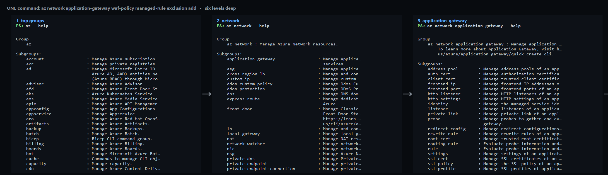
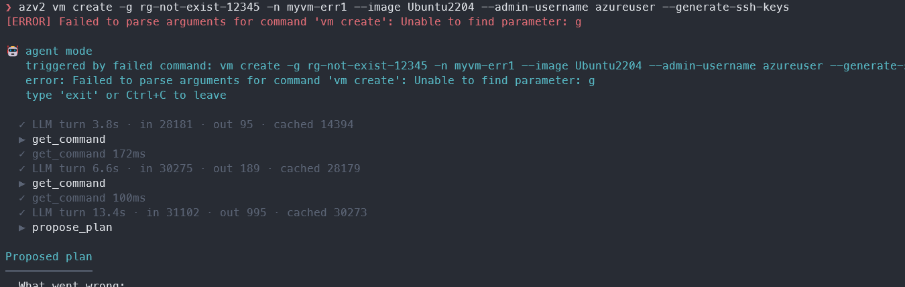

A person navigates
“I know the command. Give me the exact page.”
EARLY DESIGN SHARING
Give AI its own manual.
Products now serve two users: people and the agents acting for them.
REAL AZURE CLI HELP · LEVELS 1–3

REAL AZURE CLI HELP · LEVELS 4–6

THE INTERFACE MISMATCH
“I know the command. Give me the exact page.”
“Give me everything related enough to plan the next step.”
THE COST OF GUESSING

A SMALLER CONTRACT
Return a compact catalogue of every capability.
Return complete details for fuzzy, related matches.
THE AI MANUAL
Identity, version, and runtime state
What already exists for this user
Supported commands and parameters
Live constraints the model cannot know
ONE SOURCE OF TRUTH
Same logic. Same output. Far less maintenance.
LIVE DEMO
THE PRODUCT PATTERN
THE ASK
Not another agent. A reliable interface for every agent.